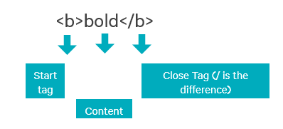

Learning Programming at Udacity
About me

I am Kranthi from INDIA. I am attending Introduction to Programming Nanodegree. I am gaining a lot of knowledge. I am already starting to realize where I am going to be at the end of this course. There is lot of perspective change in me at the end of Stage 1 itself. It is good to be here. Way to go!!!
1. Basics of Web
Major pieces of World Wide Web a.k.a are User, PC with a browser, Internet a.k.a World's Largest Network, HTTP (application protocol to communicate with servers) and Servers (PCs hosting files)
1.1 How the Web Works - How are major pieces of WWW connected?
When user requests any webpage, DNS resolves the URL with IP address and connects to the server through Internet using HTTP protocol.
2. HTML
HTML stands for Hyper Text Markup Language. World Wide Web is collection of HTML files. Multiple HTML files can be linked by hyper links. HTML Consists of
Block HTML elements have a kind of virtual boundary surrounding them.HTML elements are formed by HTML tags. Below is how bold HTML element looks like:
- Text - actual content
- Markups - defines the look
- References to other documents, images, videos or any content
- Links to other pages a.k.a Hyperlinks
Block HTML elements have a kind of virtual boundary surrounding them.HTML elements are formed by HTML tags. Below is how bold HTML element looks like:

Not all HTML elements have closing tags. There are few elements which has only starting tag.
2.1 DOM - Tree Like Structure of HTML
DOM stands for Document Object Model. HTML is always read in structured manner by all browsers. Each HTML element can host other HTML elements.
It is good to have well-organized structure HTML page, which eases the styling and also eases maintenence of blocks.
3. CSS
CSS stands for Cascading Style Sheets. As the name suggests, they are meant for styling everything that is viewable on the HTML page.
CSS can be linked into HTML in three ways. Here, they are:
CSS can be linked into HTML in three ways. Here, they are:
- Writing CSS in another file and link it HTML using link tag
- Include the code of CSS in same HTML file using style tag
- Styling it inline using style attribute
3.1 Understanding the Cascading
Cascading in CSS is like a tree-branch/ancestor-descendant structure. I would like to use same example that Udacity coach taught me - hierarchial law. Country law is applicable to all states, state law applies to all cities, your house rules applies to all people in the house. Similarly styling also maintains similar heirarchy. Rules to body tag will apply to all div tags under it. Individual div can have its own styling. Styles of body and div will have impact on span tag used within. This feature/property of CSS is called inheritance.
There are Properties that can be inherited are color, font, letter-spacing, line-height, list-style, text-align, text-indent, text-transform, visibility, white-space and word-spacing. Properties that cannot be inherited are background, border, display, float and clear, height, and width, margin, min- and max-height and -width, outline, overflow, padding, position, text-decoration, vertical-align and z-index.
There are Properties that can be inherited are color, font, letter-spacing, line-height, list-style, text-align, text-indent, text-transform, visibility, white-space and word-spacing. Properties that cannot be inherited are background, border, display, float and clear, height, and width, margin, min- and max-height and -width, outline, overflow, padding, position, text-decoration, vertical-align and z-index.
3.2 Elements, Classes, ID in CSS
Apply style to HTML elements by mentioning html element name with styling attributes and values in flower braces h2 {color: blue}
Apply style to multiple HTML elements using classes. For e.g. In this page, all topic headings belong to same Class, so that is the reason, they all look blue. Syle a Class by pre-fixing period infront of class name .headings {color: blue}
Apply to style to specific element using id. For example, all the description in this page has same styling except for the content in About me section. It has some additional styling. It leaves some space for image to the right. Any special styling to spefic element/box is done by IDs. Style using ID in CSS as #abtme {max-width: 95%}
Some important points about Classes and ID:
Apply style to multiple HTML elements using classes. For e.g. In this page, all topic headings belong to same Class, so that is the reason, they all look blue. Syle a Class by pre-fixing period infront of class name .headings {color: blue}
Apply to style to specific element using id. For example, all the description in this page has same styling except for the content in About me section. It has some additional styling. It leaves some space for image to the right. Any special styling to spefic element/box is done by IDs. Style using ID in CSS as #abtme {max-width: 95%}
Some important points about Classes and ID:
| Class | ID |
|---|---|
| Avoids Repetition | Avoids Repetition |
| Class name can be same to all elements belonging to same Class | It is good coding practice to have unique ID to each element, if ID is being used |
| Cannot be used as part of navigator | Can be used as part of Navigator |
Best Practices of HTML
Below are just few tips to make your life easier while coding in HTML and CSS:
- Alwys divide into as many boxes as you can, but be litle cautious
- Use Classes to avoid repetition. Benefits of avoiding repetition are as follows:
- Less coding and less code
- Lesser size of HTML files, computer download pages from servers to show webpages when you browse, it will save money if you have lesser size
- Saves alot of time
- Less code inturn leads to less typing, which means less human prone errors. Unlike Human brains, Computer cannot relate to context and understand it, if they are spelling mistakes
- If you keep styling repeatedly, you might have your style code spread over in lot of places rather than at one place. It might waste time while debugging and also it might like unorganized
- Main good intendation and hierarchy, so that it is readable to you and others
- Always visualize the design before coding
- Never use IDs the way you use Classes, they lead to many issues
- Use Developer tools to change the Style on the go.
- Google, W3Schools are best references
- Make your Class and ID names meaningful, so that it is easy for you to refer back in the future.
4. Python
Before really understanding what python is, we shall try to understand what a programming language is.
Conditional blocks - as name says all, a block of code is executed based of conditions result. Check out of if-else in python examples in Google (or) check out html_generator.py in the git repository
4.1 PROGRAMMING LANGUAGE
Language is basically used for communication. An example of language is English. But if we start talking to computer in general languages, it would take pages to do a small task.
Another greater problem is ambiguity present in generally spoken languages, which computers might misinterpret.
So, all languages that we can talk to computers are made of strict grammar called Syntaxes (or) Instructions.
So Programming Language is nothing but a set of instructions, that a computer can understand.
Different Programming Languages are - Assembly Level Language, C, C Plus Plus, Java, Python, Perl, HTML and so on.
One liners about each type of languages:
Processor processes the instructions provided. Fastness of the processor depends on its number of cycles that it can clock in a second (or) number of instructions that can process in a second.
Another greater problem is ambiguity present in generally spoken languages, which computers might misinterpret.
So, all languages that we can talk to computers are made of strict grammar called Syntaxes (or) Instructions.
So Programming Language is nothing but a set of instructions, that a computer can understand.
Different Programming Languages are - Assembly Level Language, C, C Plus Plus, Java, Python, Perl, HTML and so on.
One liners about each type of languages:
- Assembly Level Languages - Close to hardware, instructions are straight to hardware - may take many instrcutions to complete a task
- Compiler based Languages - C, C PLUS PLUS - Basic of all languages - Needs to be compiled from platform to platform
- Byte Code based Languages - Java, Python - These languages form byte code which runs on virtual platform, once this virtual platform is available, it can run on any platform. This virtual platform will convert the instructions in such a way that underlying platform can understand
- Interpreter based Languages - They get interpreted on the go.
- Markup Languages/Style Languages - they are used for looks/styling
Processor processes the instructions provided. Fastness of the processor depends on its number of cycles that it can clock in a second (or) number of instructions that can process in a second.
4.2 PYTHON
Python is modern programming language. It is very efficient. Difference between C-Style and Python is that Python do not have flower braces to tell about where a block is starting and ending. It strictly depends on intendation. So intendation is very important in Python compared to any other language. If there are any set of instructions that needs to be repeated, its better to be written as procedure or function. Syntax for defining a procedure in Python is def. Python cam store data in differnt types - Data types.
- strings - str
- lists - list
- dictionary - dict
4.3 STRINGS
Strings are immutable datatype, once assigned cannot be altered, but can be re-assigned. Strings are sequence of characters. Each character can be accessed by indices, which range from 0 to one less than length of the string. Length of the string is nothing but number of characters inside the string. Strings will be assigned to variable with characters mentioned within single quotes or double quotes based on situation
For example example = "I am String"
Length of the example can be found by len(example), which will be 11 in this case.
Induvidual characters (or) multiple characters can be accessed by using indices:
To find part of the string or character in a string, there is built-in function in String. That is find(). find() accepts two inputs at the maximum. First input is "character(s)" to find in mother string and second input is index offset from where the search has to be started. Output would be the index, if the character(s) are found or -1 if not found. It also returns only first instance of occurance from the point of search.
example.find('i', 1) will return 8
For example example = "I am String"
Length of the example can be found by len(example), which will be 11 in this case.
Induvidual characters (or) multiple characters can be accessed by using indices:
- example[0] will return I
- example[10] will return g
- example[0:9] or example[:9] will return "I am Strin"
- example[1:9] will return " am Strin"
- example[11] will return an error
- example[-1] will also return "g". This is called reverse access, which can be done by using negative indices
To find part of the string or character in a string, there is built-in function in String. That is find(). find() accepts two inputs at the maximum. First input is "character(s)" to find in mother string and second input is index offset from where the search has to be started. Output would be the index, if the character(s) are found or -1 if not found. It also returns only first instance of occurance from the point of search.
example.find('i', 1) will return 8
4.3 LISTS
As you have already gone through Strings, I would like to explain lists in comparison with strings. Unlike Strings, Lists are mutable datatype. As name specifies the meaning, it is list or an array or collection of items. Each induvidually can again be of different datatypes. There is no find function for Lists in Python. To find items in list, there are other ways which you will read in sections.
Here is how list looks like and is assigned, li = [1, 'abc', ['def', 4]]
Like Strings, List items also are accessed by using indices.
Easy way to check if an item is list or not is by item in list. If item exists, it will return True else False.
You can alter items of the list by using their indices, li[0] = 10, now li will be li = [10, 'abc', ['def', 4]]. One can add new items also using the same, but append is preferred for adding new items
One can use append items to the list using append function. li.append(15), now li will be [10, 'abc', ['def', 4], 15]
Here is how list looks like and is assigned, li = [1, 'abc', ['def', 4]]
Like Strings, List items also are accessed by using indices.
- li[0] will return 1
- li[1] will return 'abc'
- li[2] will return list - ['def', 4]
- li[2][0] will return 'def'
- li[2][2] will return IndexError
Easy way to check if an item is list or not is by item in list. If item exists, it will return True else False.
- 1 in liwill return True (True is Boolean 1)
- ['def', 4] in liwill return True (True is Boolean 1)
- ['def', 10] in liwill return False (True is Boolean 0)
You can alter items of the list by using their indices, li[0] = 10, now li will be li = [10, 'abc', ['def', 4]]. One can add new items also using the same, but append is preferred for adding new items
One can use append items to the list using append function. li.append(15), now li will be [10, 'abc', ['def', 4], 15]
4.3 DICTIONARIES
I will describe differences between List and Dictionary here. As name suggests, it is mapping of elements. Like a language dictionary, where you have a word and meaning, here we have key and value. Lists access their elements by indices, dictionaries access by using their keys, hence might return key errors in case if unknown/undefined key is accessed.
d = {'key1': 1, 'key2': 2}
An item can be added to dictionary by d['key3'] = 3 (or) by using update function d.update({'key4': 4})
Search can done using keys, 'key1' in d will return True if 'key1' exists in d, else False
d = {'key1': 1, 'key2': 2}
An item can be added to dictionary by d['key3'] = 3 (or) by using update function d.update({'key4': 4})
Search can done using keys, 'key1' in d will return True if 'key1' exists in d, else False
4.3 Basic Operations, Expressions and Conditional blocks
- All basic arthematic operations can be done by using +, - , * (multiply), / (quotient), % (reminder/modulus)
- Comparison operators are == (equals), =< (less than or equals) and >= (greater than equals)
- Using + operator on two strings/lists will result in concatenation, does not work on dictionaries
- Using * operator on String/Dictionary will append by respective number of times
- Expression syntax is "Expression/variable operator Expression/variable e.g. 2 > 3
Conditional blocks - as name says all, a block of code is executed based of conditions result. Check out of if-else in python examples in Google (or) check out html_generator.py in the git repository
4.4 LOOPS
As you have gone through if-else conditional blocks, I will make a comparisions to describe what loops are and why they are useful. Main disadvantage for if-else blocks are they can execute the code only once and then exist, say for example you want to repeat same operations on all items in list, you might want loop same logic on all items, which is not possible through if-else blocks solely. Refer to examples in git repository (inside Python folder). There are two ways of loops - for and while. For loops edge over the while loops, as you might need an extra variable to traverse through lists, as index is used in while loop, which needs to incremented as we execute, which is not required in for loops. There are cases where you might need a variable in both for and while loops - e.g. count number of times, the code has been looped.
4.5 Procedures (or) Functions
Procedure or functions are generally written to avoid repetition. Say for example you have 10 lists and you want to check if a string exists in any of the 10 lists or not. We can write a logical code to search for a string in one list and then put that code in one function, then call that function by passing each list as an input and also string to search as another input.
Few inputs that might be helpful to evryone are:
Few inputs that might be helpful to evryone are:
- Always break your problem in small pieces
- Implement smaller logics and then optimize them
- Test them as and when you write and complete small blocks of code
- Think and Develop test data, so that you can access/test all lines of code by using your test inputs
- Use traceback to debug it
- Go through python documentation (mentioned in TIPS section) for more details on any area of python while debugging
References
Reference Websites that helped me, might help you as well, check them out: